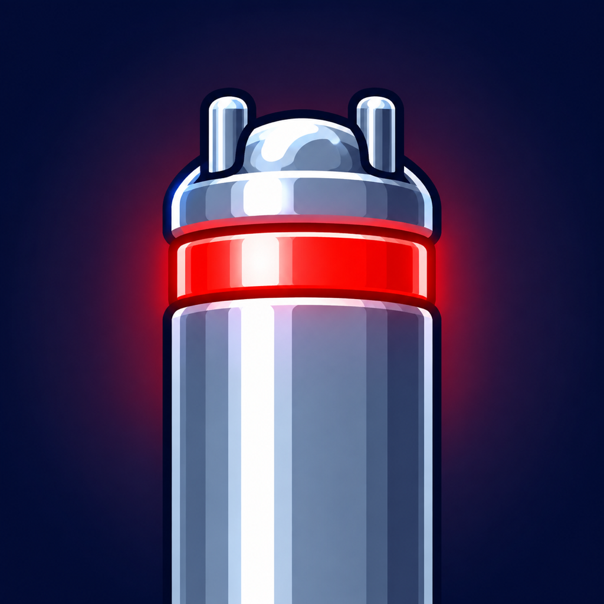

Neuralyzer
Completely hide comments from your Reddit blocked user list.
- Safari on iPhone & iPad
- Safari on Mac
- Firefox
Neuralyzer is a browser extension for Safari mac, Safari iOS, and Firefox that works 100% locally in your browser. It makes no network requests, collects no data, and stores only your on/off preference.